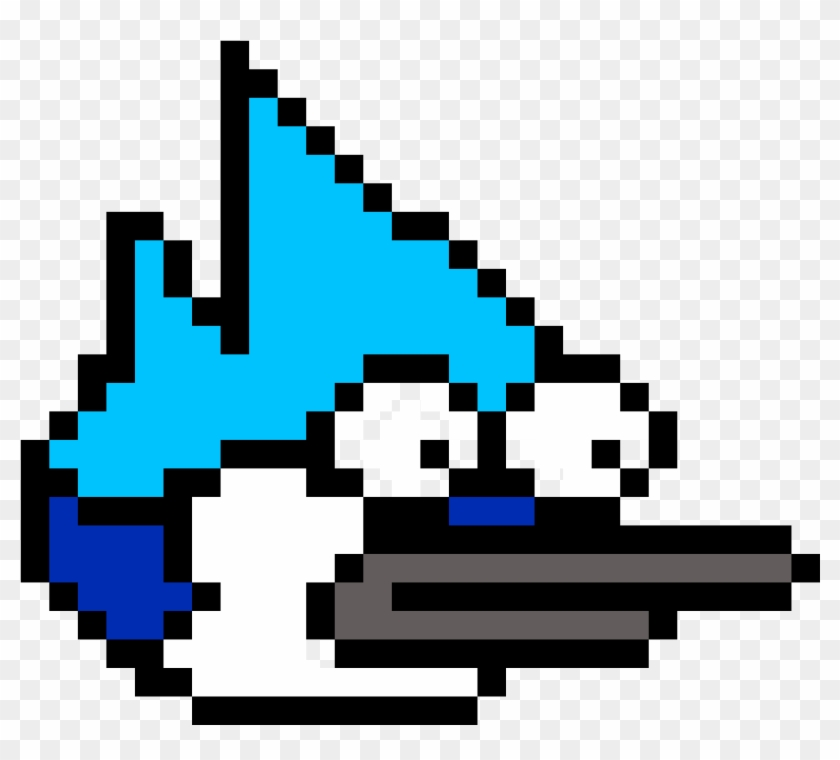
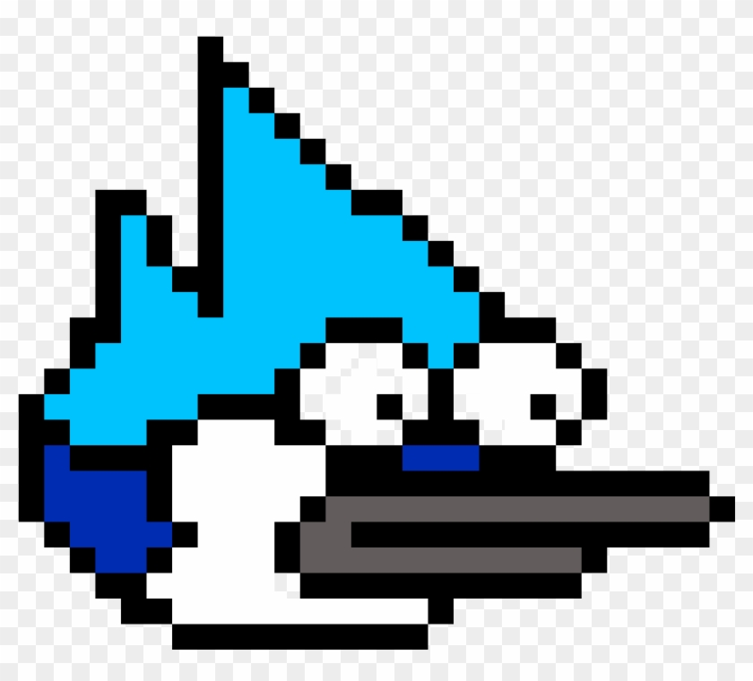

Sobre o Jogo
Apenas um voo, é um jogo criado para um projeto da faculdade e inspirado no jogo "Flappy Bird" foi modificado com um dos personagens de "Apenas um Show" que é um desenho da Cartoon Network uma emissora e streaming. O jogo consiste em passar pelos obstaculos e tem um desafio de passar por tubos verdes que são os obstaculos do jogo original para não perder toda a semelhança com o original.
.jpg) 

Dicas
Para passar pelos obstaculos deve-se ter bastante atenção com a movimentação do seu personagem pois ele pode cair muito rapido e não conseguir voar a tempo de passar pelo obstaculo, então acabar colidindo. Aque vai meu conselho tente sempre voar na altura dos obstaculo pois se descer muito, tera um triste final.
Curiosidades
Uma das Curiosidades é que esse personagem do mordecai é um modelo de 3DS de um jogo criado pela Cartoon Network e tambem é o unico da franquia, mas aqui vai outra Curiosidade que é o fato de ter dois audios dos episodios mais comicos e macabros. um deles é o episodios "macaco de imitação" onde mordecai e rigby bolam um plano para ganhar dinheiro da maneira mais inusitada, se tornando artistas de ruas, oque acaba em uma situação muito competitiva e engraçada onde eles enfrentar um homem prateado e são julgados pelo Deus dos artistas de ruas. O outro é de um episodio bastante incomum, mordecai tem uma queda por margaret que é uma garçonete de uma cafeteria e sempre tenta chavecala porem não da muito certo, quando derrepente rigby faz um trocadilho e margaret acaba gostando muito, oque acaba gerando ciumes em mordecai. Por fim rigby só queria a atenção de seu amigo mas como não teve descidiu o irritar dando em cima de margaret e a convidando para um encontro. Bem o final é feliz pois os dois se resolvem com a ajuda de um relogio mistico que volta no tempo para ajudar mordecai que fica muito triste pois matou seu melhor amigo por raiva e ciumes.